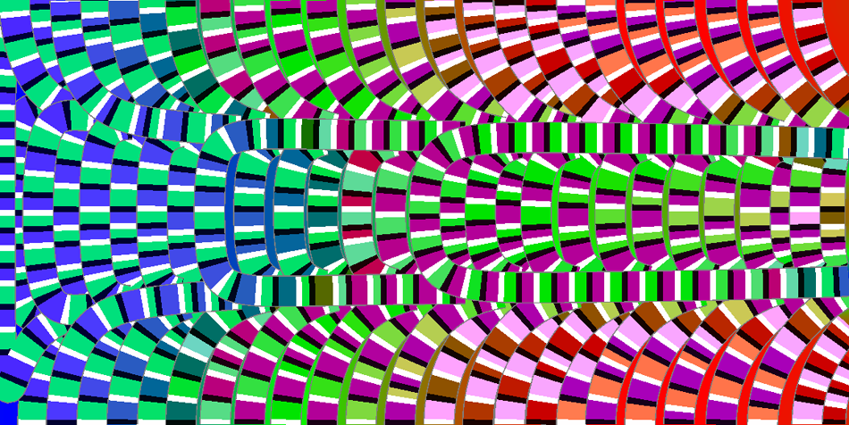

| SIGGRAPH2008 | |
|
Self-Animating Images: Illusory Motion Using |
|
|
ACM Transactions on Graphics (SIGGRAPH 2008 issue), Vol. 27, No. 3, August 2008, pp. 62:1-62:8. |
|
|  | |
|
|
Since the illusory motion effect is scale-dependent, please enlarge the image for screen display. The optimal size for display is to span the whole screen with the inspected image. Glancing around the images, without staring at a fixed position, also helps to perceive the effect. In our experiment, the best viewing distance to screen is roughly the half width of screen.
|
|
Abstract Illusory motion in a still image is a fascinating research topic in the study of human motion perception. Physiologists and psychologists attempted to understand this phenomenon by constructing simple, color repeated asymmetric patterns (RAP) and found several useful rules to enhance the strength of illusory motion. Based on their knowledge, we propose a computational method to generate self-animating images. First, we present an optimized RAP placement on streamlines to generate illusory motion for a given static vector field. Next, a general coloring scheme for RAP is proposed to render streamlines. Furthermore, to enhance the strength of illusion and respect the shape of the region, a smooth vector field with opposite directional flow is automatically generated given an input image. Examples generated by our method are shown to evidence the illusory effect, and the potential applications for entertainment and design purposes.
|
Paper (PDF, 4.94M) |
|||
| Supplementary result (PDF, 4.29M) |
||||
| SIGGRAPH in motion | ||||
|
BibTex:
@article{chi-2008-self, journal = {ACM Transactions on Graphics (SIGGRAPH 2008 issue)}, year = {2008}, volume = {27}, number = {3}, pages = {62:1-62:8}, } |
Press Clipping | |||
{kind=link}